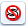
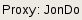

Einstellungen
können Sie eine solche individuelle Proxykonfiguration erstellen. Dies
wird aber nur Experten empfohlen.
Einstellungen
können Sie eine solche individuelle Proxykonfiguration erstellen. Dies
wird aber nur Experten empfohlen.JonDoFox ist ein Firefox-Browserprofil (Browserkonfiguration), das speziell für anonymes und sicheres Websurfen optimiert ist. Sie können JonDoFox sowohl in Ihren Firefox integrieren als auch separat und vom USB-Stick ausführen. Im Folgenden wird beschrieben, wie Sie JonDoFox installieren und benutzen.
Diese Installationsoption integriert das JonDoFox-Profil in einen lokal installierten Firefox, so dass JonDoFox nahtlos mit Ihrem System zusammenarbeitet. Eine eventuell von Ihnen vorher angelegte "normale" Firefox-Konfiguration wird durch die Profil-Installation nicht angetastet. Sie können nach der Installation bei jedem Start von Firefox zwischen Ihrer und der JonDoFox-Konfiguration auswählen.
Installieren Sie zunächst Firefox auf Ihrem System, falls noch nicht geschehen. Anschließend können Sie die Installation von JonDoFox wie folgt durchführen:
Laden Sie das JonDoFox-Installationsprogramm herunter. Starten Sie das heruntergeladene Programm durch einen (Doppel-)Klick und folgen Sie dann den Anweisungen.
Hinweis
Der Installer kann auch verwendet werden, um das von ihm installierte
Profil wieder zu entfernen, doch beachten Sie:
Bitte verändern Sie die Einträge nicht, die der Installer
vornimmt. Andernfalls kann keine saubere Deinstallation mehr
gewährleistet werden! Nehmen Sie ebenso die Deinstallation mit dem
Installer nur dann vor, wenn Sie diesen auch für die
JonDoFox-Installation verwendet haben.
Benutzer von Debian und Ubuntu können das Software-Repository der JonDos GmbH nutzen, um JonDoFox und JonDo zu installieren.
install_linux.sh.
Führen Sie es aus, um JonDoFox zu installieren. user@computer#:/target> ./install_linux.sh
Hinweis
Wenn eine neue Version von JonDoFox erscheint, können Sie die neue Version
jeweils "über" die alte installieren, mit den gleichen eben besprochenen Schritten. Ihre
Lesezeichen und die Zertifikatsdatenbank bleiben dabei erhalten.
Die Version "zum Mitnehmen" wird für Wechseldatenträger empfohlen. Sie integriert sich nicht in Ihr System. Falls Sie Programmverknüpfungen zu JonDoFox benötigen, müssen Sie diese bei der Version "zum Mitnehmen" selber anlegen.
Das JonDoFox-Installationsprogramm ist auch für die Installation "zum Mitnehmen" geeignet. Wenn Sie die "für Unterwegs"-Option wählen, können Sie JonDoFox damit also sowohl auf einem Wechseldatenträger als auch auf Ihrer Festplatte einrichten. Eine bereits auf Ihrem Rechner vorhandene Firefox- oder JonDoFox-Installation wird davon nicht beeinflusst, sofern Sie JonDoFox nicht ins gleiche Verzeichnis installieren und eine vorhandene Installation dadurch aktualisieren. Beim Aktualisieren von früheren JonDoFox-Versionen bleiben Ihre Lesezeichen und die Zertifikatsdatenbank erhalten. JonDoFox "zum Mitnehmen" integriert sich automatisch in das PortableApps-Menü für das auch viele andere Anwendungen erhältlich sind.
Im JonDoFox sind bereits alle für sicheres und spurenarmes Surfen relevanten Erweiterungen mit optimalen Voreinstellungen vorhanden. Über die Symbole in der Firefox-Statusleiste (bzw. das NoScript-Symbol  in der Toolleiste (gilt nür Firefox 4, in Firefox 3 ist das Icon mit in der Statusleiste)) haben Sie stets die Kontrolle über die wichtigsten der in JonDoFox integrierten Funktionen (Cookie Monster, Adblock Plus, NoScript und JonDoFox), die im Folgenden genauer erläutert werden:
Im Folgenden werden die Hauptfeatures unserer JonDoFox-Erweiterung näher erläutert, die ein sichereres und anonymes Surfen im Internet ermöglichen.
Wenn Sie mit einem anderen (lokalen) Proxy als JonDo oder ganz ohne Proxy im Web surfen wollen, benutzen Sie einfach die in JonDoFox (rechts unten) integrierte Schaltfläche , um zwischen verschiedenen Proxy-Konfigurationen bequem hin- und herzuschalten:
Einstellungen
können Sie eine solche individuelle Proxykonfiguration erstellen. Dies
wird aber nur Experten empfohlen.Wenn Sie eine Datei am Proxy vorbei herunterladen möchten, ohne den Proxy dabei zu deaktivieren (z.B. um bei großen Downloads Kosten oder Zeit zu sparen), öffnen Sie dazu einfach das Kontextmenü mit einem rechten Mausklick auf die Datei und wählen Sie JonDo/Tor/Proxy umgehen und Ziel speichern unter....
Der Referer ist eines der Merkmale, mit dessen Hilfe sich Nutzer beim Surfen unterscheiden lassen. Das kann allerdings verhindert werden, indem man unser Referer-Management aktiviert:
Dabei wird der Referer nicht einfach gelöscht, schließlich lassen sich einige Webangebote ohne einen mitgeschickten Referer überhaupt nicht benutzen. Vielmehr wird je nach Kontext des Seitenaufrufs ein Referer gesetzt (z.B. bei Weiterleitungen innerhalb derselben Domain) oder leer übergeben (z.B. beim Laden von Lesezeichen). Damit wird garantiert, dass aus dem Referer keine Informationen zur Nutzeridentifizierung gewonnen werden können.
Nicht nur über den Referer, sodern auch über den individuellen User Agent, den der Browser bei Webanfragen mitsendet, lassen sich Nutzerinformationen gewinnen. Daher haben wir einen einheitlichen User Agent zusammengestellt, den alle JonDo-Nutzer mitschicken, wenn sie Anfragen an das WWW stellen. Wenn hingegen Tor als Proxy eingestellt wird, so wird der User Agent an die Vorgaben von Torbutton angepasst. Wer seinen Proxy manuell konfigurieren möchte, hat die Möglichkeit, zwischen verschiedenen User Agents zu wählen:
Neben dem Versuch, aus dem Referer, dem User Agent und anderen HTTP Headern Informationen über den Nutzer zu gewinnen, gibt es noch die Möglichkeit, den Cache des Browsers für Angriffe zu verwenden. Dabei wird versucht, die kürzere Ladezeit von Webseiten aus dem Cache auszunutzen oder sogenannte Cache-Cookies zu installieren. Zum besseren Schutz vor diesen Angriffen wurde der Code der SafeCache-Extension mit leichten Modifikationen in unsere Erweiterung integriert. Im JonDoFox-Einstellungsmenü findet sich ein entsprechender Hinweis darauf:
...
Für einen besseren Schutz vor gefälschten SSL-Zertifikaten wurde die Funktionalität der Certificate Patrol-Extension etwas erweitert und in die JonDoFox-Extension aufgenommen (siehe JonDoFox' Einstellungsmenü):
...
Dadurch wird es für den Nutzer zum einen sehr komfortabel, die Fingerabdrücke der Zertifikate zu überprüfen. Zum anderen wird bei Zertifikatsänderungen ein Dialog eingeblendet, der den Nutzer auf eventuell vorhandene Unregelmäßigkeiten hinweist und so besser vor Man-in-the-middle-Angriffen schützt.
Mit dem JonDoFox haben Sie die Möglichkeit, bequem temporäre E-Mail-Adressen zu benutzen. Klicken Sie dazu mit der rechten Maustaste auf ein Textfeld, in dem die E-Mail-Adresse erscheinen soll und wählen Sie aus dem aufklappenden Menü folgenden Eintrag aus:
Danach wird die angeforderte E-Mail-Adresse in das Textfeld eingefügt und Ihr Account in einem neuen Tab geöffnet. Wenn Sie selbst bestimmen möchten, welchen Anbieter temporärer E-Mail-Adressen Sie verwenden wollen, dann können Sie die entsprechenden Anpassungen in dem JonDoFox-Einstellungsmenü vornehmen:
Um die Eingaben in die Suchleiste des Browsers vor ungewollten Beobachtern zu schützen, entfernt JonDoFox diese nach jeder Eingabe. Außerdem wird die Suchhistorie, in der die eingegebenen Begriffe gespeichert werden, jede halbe Stunde gelöscht. Damit kann es zum einen nicht mehr passieren, dass die letzte Suchanfrage für jeden, der Zugang zur Browsersitzung des Nutzers hat, einsehbar bleibt. Zum anderen wird die Möglichkeit, dass Einträge in der Suchistorie den Nutzer kompromittieren, minimiert, ohne deren Funktionalität ganz aufzugeben.
Mittels Cookie Monster können Sie sehr komfortabel bestimmen, von welchen Webseiten Sie Cookies annehmen und bei welchen Sie Cookies unterbinden wollen. Wenn Sie mit der linken Maustaste auf das Icon von Cookie Monster klicken, können Sie im unteren Teil des Menüs folgende Freigaben für die jeweils besuchte Webseite vornehmen:
 in der Statuszeile.
in der Statuszeile.Wenn Sie auf das NoScript-Icon  klicken, erhalten
Sie eine Auflistung der Adressen/Dienstanbieter mit JavaScript-Codes auf der
gerade besuchten Webseite. Die entsprechenden Einträge sind durch das
Icon
klicken, erhalten
Sie eine Auflistung der Adressen/Dienstanbieter mit JavaScript-Codes auf der
gerade besuchten Webseite. Die entsprechenden Einträge sind durch das
Icon  gekennzeichnet. Neben der betrachteten Websites
werden häufig auch Scripte von Subdomains benötig, um die volle Funktion zu ereichen.
Welche Subdomains freigegeben werden müssen, kann nur durch probieren ermittelt werden.
gekennzeichnet. Neben der betrachteten Websites
werden häufig auch Scripte von Subdomains benötig, um die volle Funktion zu ereichen.
Welche Subdomains freigegeben werden müssen, kann nur durch probieren ermittelt werden.
Hinweis: Skripte von Drittanbietern bzw. anderen Adressen werden üblicherweise nur dazu verwendet, um Sie auszuspionieren, und sind für die Funktionalität der Webseite selten notwendig.
Durch einen Klick auf temporär erlauben
aktivieren Sie die Skripte für diesen Eintrag. Mit einem weiteren Klick
können Sie eine bereits
erteilte Berechtigung wieder entziehen (siehe nächste Grafik). Wenn Sie allen Adressen die
temporären Berechtigungen entziehen wollen, können Sie dies, indem Sie
auf den Eintrag  Temporäre
Berechtigungen aufheben klicken.
Temporäre
Berechtigungen aufheben klicken.
Für Websites die sie häufig besuchen, können sie die Einstellungen mit einem Klick auf den Menüpunkt Berechtigungen dieser Seite speichern dauerhauft festlegen. Dann muss man nicht bei jedem Besuch die Freiaben wieder neu einrichten.
Sollten Sie einer Adresse grundsätzlich nicht vertrauen, können
Sie diese als nicht vertrauenswürdig einstufen, und sie wird
anschließend nicht mehr unter den Adressen auftauchen, die sie zulassen
können. Um diese Einstufung durchzuführen, fahren Sie mit der Maus
über  Nicht
vertrauenswürdig. Sie erhalten dann die Übersicht der
Adressen auf der gerade besuchten Webseite, denen Sie das Vertrauen entziehen
können:
Nicht
vertrauenswürdig. Sie erhalten dann die Übersicht der
Adressen auf der gerade besuchten Webseite, denen Sie das Vertrauen entziehen
können:
Die Aktion kann auf die gleiche Weise wieder rückgängig gemacht werden.
Es gibt vielleicht Webseiten, die man allein über eine mit SSL gesicherte Verbindung ansurfen möchte (das beinhaltet auch die eingebetteten Bilder, Stylesheets etc.). NoScript gibt Ihnen die Möglichkeit, SSL für Verbindungen zu erzwingen.
Klicken Sie dazu mit der rechten Maustaste auf das NoScript-Symbol . Unter Einstellungen -> Erweitert -> HTTPS -> Verhalten bietet NoScript mittels einer Whitelist genau diese Option an, wie man im folgenden Bildschirmfoto sehen kann. Es ist dabei möglich, sowohl einzelne Domains in die Whitelist einzutragen, als auch mit Hilfe des Wildcard-Zeichens ("*") SSL für ganze Subdomains zu erzwingen.
Eine eigene Whitelist können Sie sich mit Hilfe der erweiterbaren Sammlung von HTTPS Domains im Wiki zusammenstellen. Andere Erweiterungen enthalten eine vordefinierte Liste, z.B. HTTPS-Everywhere.
Wenn Sie eine Webseite besuchen, die Plugin-Inhalte, wie Flash-Movies oder Java-Applets, enthält, werden diese von NoScript grundsätzlich blockiert. Anstelle des aktiven Inhalts erscheint ein NoScript-Platzhalter:

Sie können den jeweiligen Inhalt durch einen Klick auf den Platzhalter
oder über die Auswahl  Geblockte Objekte im
NoScript-Menü
freigeben.
Geblockte Objekte im
NoScript-Menü
freigeben.
Warnung: Ohne spezielle Schutzmaßnahmen kann über freigegebene Plugin-Inhalte Ihre Anonymität aufgehoben und sogar Ihr System beschädigt werden.
Um nicht das sehr gefährliche Flash im Browser aktivieren zu müssen, sollten Sie Web-Videos immer auf Ihre Festplatte herunterladen und von dort abspielen. Dies erspart Ihnen außerdem den zusätzlichen Download-Datenverkehr, wenn Sie ein Video mehrmals betrachten möchten. JonDoFox enthält dazu das Download-Tool UnPlug. Wenn Sie z.B. auf einer YouTube-Seite sind, klicken Sie einfach auf den entsprechenden Menüeintrag (rot markiert) in Ihrem Extras-Menü und wählen Sie das Video aus, das Sie herunterladen möchten:
Für Windows gibt es außerdem ein hervorragendes Freeware-Programm namens aTube Catcher speziell für den Video Download. Die Konfiguration des Programms für anonyme Downloads ist im Wiki beschrieben.
Adblock Plus  arbeitet als Werbefilter im Hintergrund. Normalerweise müssen Sie dessen
Einstellungen nicht verändern, können aber jederzeit eigene
Filterlisten ergänzen.
arbeitet als Werbefilter im Hintergrund. Normalerweise müssen Sie dessen
Einstellungen nicht verändern, können aber jederzeit eigene
Filterlisten ergänzen.